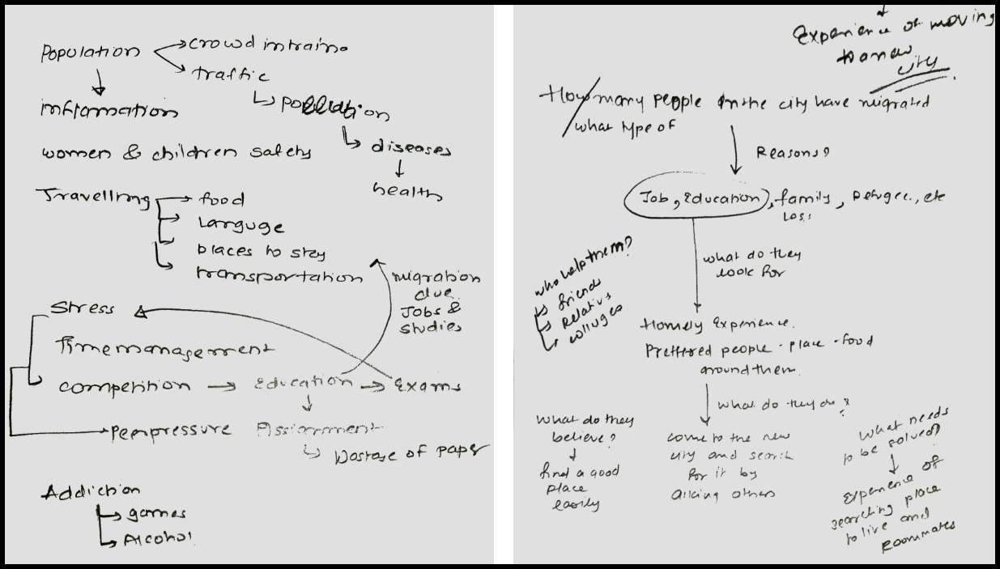

Brainstorming
To come up with a problem to work on, I started jotting down my most recent experiences and recollecting the frustrations and the complaints that I listen from the people around me. Out of these, the problem I could relate to the most was - Travelling. Travelling might be fun, but if asked to adapt to the new place, one might face a lot of problems. I have heard people visiting a new place and complaining that throughout the trip, we could not find the food of our type or maybe the people around us were not that friendly. What struck me was the fact that what do people who need to shift themselves for education and jobs do?

I had a few classmates belonging to different cities, studying in Mumbai and living away from their homes. I had heard them talk about the problems that they face having moved to a new city. Out of all, the most challenging one was to find for themselves a convenient place for accommodation. But before diving into the actual problem, I tried to understand(at a generic level) the problems faced when one moves to a new city. For this, I made a questionnaire which directed the flow of the interview. I started asking these questions to other fellow participants of the Winter School. I made sure that the questions framed were not directive and were open-ended. This ensured that the people shared with me a broader range of problems that they face.
User Research
1. Understanding the problem and the target users:
With research, I wanted to study the difficulties faced by the people that visit a new place to pursue higher studies, job or any other reason. I also wanted to understand their choice of living, preferences and the methods that they currently follow to find a place of accommodation and roommates if any. Since, I was at IIT Hyderabad and was not allowed to leave the campus during the course, the best way for me to research about the users and understand their needs, was to conduct telephonic interviews. I contacted the friend I knew who had shifted to Mumbai for pursuing higher studies. Additionally, I also talked to the ones who came here because of their jobs. Out of all these interviews, I chose three of them and created user personas, to understand the needs, goals and frustrations of the users.
{kind=link}
{kind=link}
{kind=link}
Ideation
I had a lot of references given by the users during the interview. However, each of them failed to satisfy this particular problem. I listed down all the currently used applications along with their features and drawbacks:
Further to visualise the concept I made a storyboard. I made a quick sketch to explain the utility and features of the application.
Features
With this, I was able to come up with a bunch of features for the required platform. I finally decided to move forward with the idea of designing an application which helps build a sense of community between the room finders, roommate finders and the room lenders - Fynder.
Low Fidelity Prototype
To understand the scope of FYNDER, I decided to create lo-fed wireframes of the app. These wireframes were essential in understanding the flow of the application.
High Fidelity Prototype
With wireframes ready. I could design the final screens of the application
More from the User Experience Design Winter School-
yashviu@gmail.com
View my profile on:-